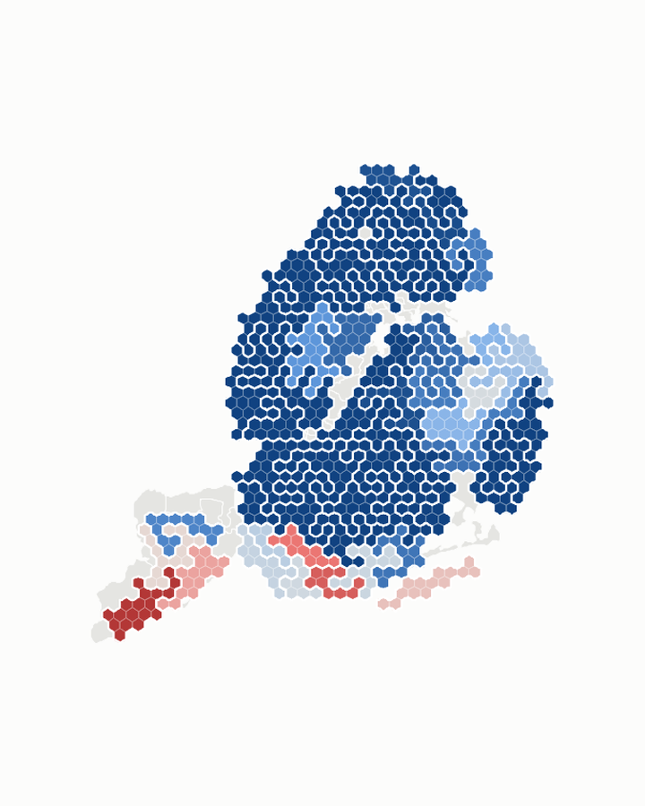
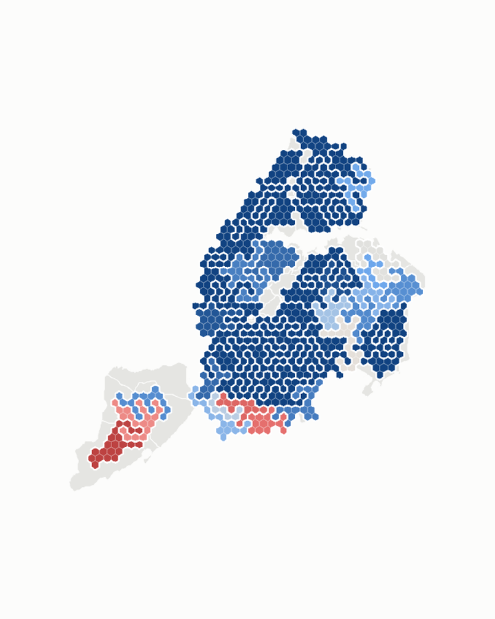

Land vs people
County results drawn two ways: by land area, and by the number of people who live there. Pick an election.
 Alabama2026 GovernorJones vs Tuberville
Alabama2026 GovernorJones vs Tuberville Alabama2026 U.S. SenateWess vs Moore
Alabama2026 U.S. SenateWess vs Moore Arizona2026 GovernorHobbs vs Biggs
Arizona2026 GovernorHobbs vs Biggs California2026 GovernorBecerra vs Hilton
California2026 GovernorBecerra vs Hilton Colorado2026 GovernorWeiser vs Marx
Colorado2026 GovernorWeiser vs Marx Colorado2026 U.S. SenateHickenlooper vs Baisley
Colorado2026 U.S. SenateHickenlooper vs Baisley Georgia2026 U.S. SenateOssoff vs Collins
Georgia2026 U.S. SenateOssoff vs Collins Illinois2026 GovernorPritzker vs Bailey
Illinois2026 GovernorPritzker vs Bailey Illinois2026 U.S. SenateStratton vs Tracy
Illinois2026 U.S. SenateStratton vs Tracy Kansas2026 GovernorHolscher vs Masterson
Kansas2026 GovernorHolscher vs Masterson Kentucky2026 U.S. SenateBooker vs Barr
Kentucky2026 U.S. SenateBooker vs Barr Louisiana2026 U.S. SenateDavis vs Letlow
Louisiana2026 U.S. SenateDavis vs Letlow Michigan2026 GovernorBenson vs James
Michigan2026 GovernorBenson vs James Michigan2026 U.S. SenateEl-Sayed vs Rogers
Michigan2026 U.S. SenateEl-Sayed vs Rogers Mississippi2026 U.S. SenateColom vs Hyde-Smith
Mississippi2026 U.S. SenateColom vs Hyde-Smith North Carolina2026 U.S. SenateCooper vs Whatley
North Carolina2026 U.S. SenateCooper vs Whatley North Dakota2026 U.S. House (at-large)Hammer vs Fedorchak
North Dakota2026 U.S. House (at-large)Hammer vs Fedorchak New Jersey2026 U.S. SenateBooker vs Murphy
New Jersey2026 U.S. SenateBooker vs Murphy New Mexico2026 GovernorHaaland vs Hull
New Mexico2026 GovernorHaaland vs Hull New Mexico2026 U.S. SenateLuján vs Marker
New Mexico2026 U.S. SenateLuján vs Marker Nevada2026 GovernorAaron Ford vs Lombardo
Nevada2026 GovernorAaron Ford vs Lombardo New York2026 GovernorHochul vs Blakeman
New York2026 GovernorHochul vs Blakeman
New York City2026 Governor, by Assembly districtHochul vs Blakeman
New York City2026 Governor, by council districtHochul vs Blakeman Ohio2026 GovernorActon vs Ramaswamy
Ohio2026 GovernorActon vs Ramaswamy Pennsylvania2026 GovernorShapiro vs Garrity
Pennsylvania2026 GovernorShapiro vs Garrity Texas2026 U.S. SenateTalarico vs Paxton
Texas2026 U.S. SenateTalarico vs Paxton